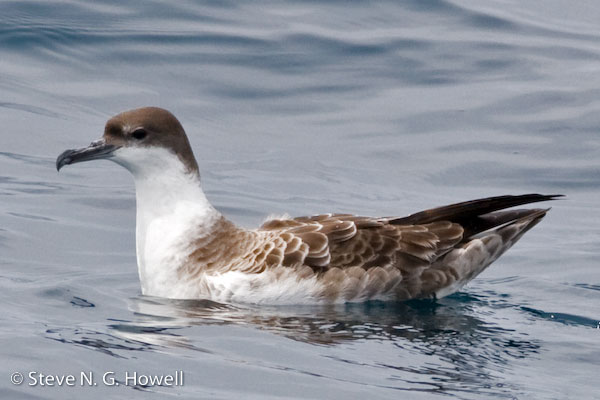

| These photographs accompany records that have been recently submitted to the committee. This record
has been ACCEPTED.  Great Shearwater Puffinus gravis 26 April 2010, Cordell Bank., MRN 2010-035 © 2010 Steve N. G. Howell Back to CBRC Rare Bird Photos |